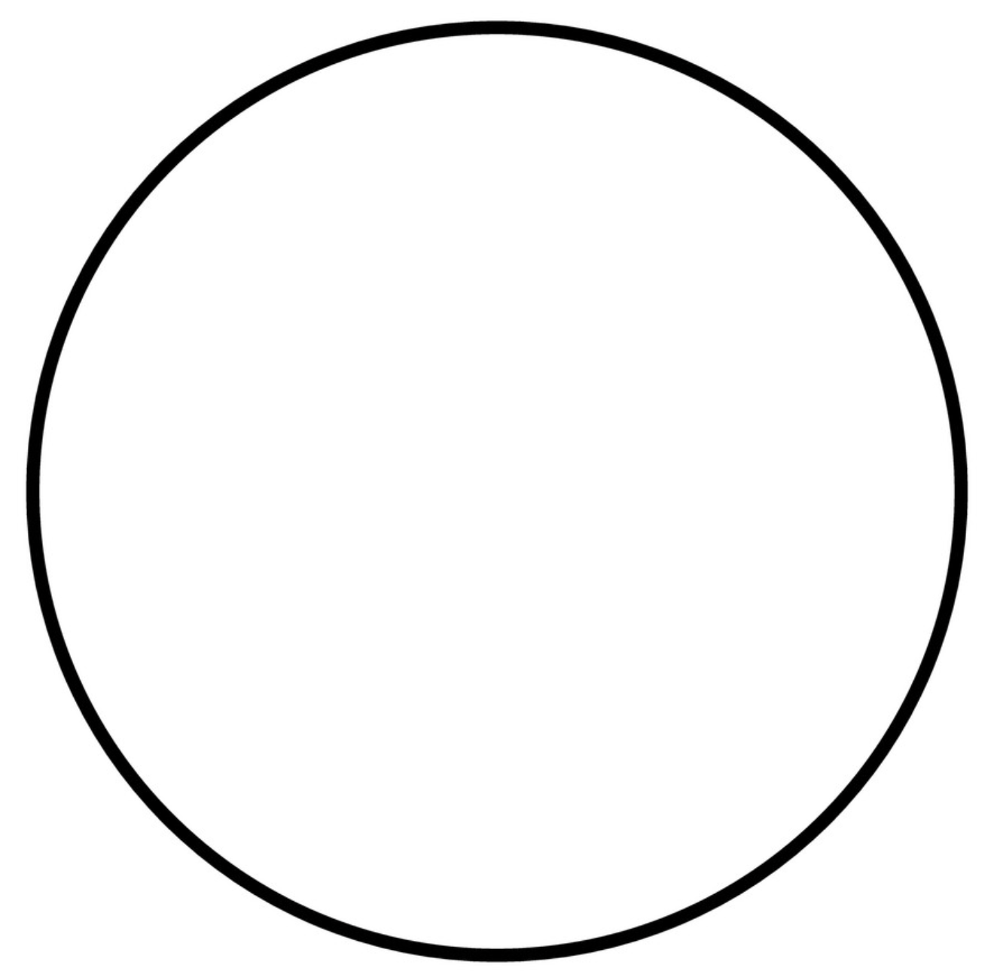
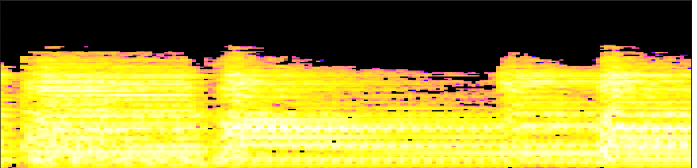
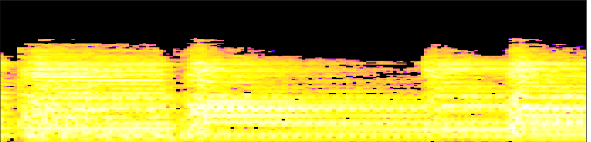
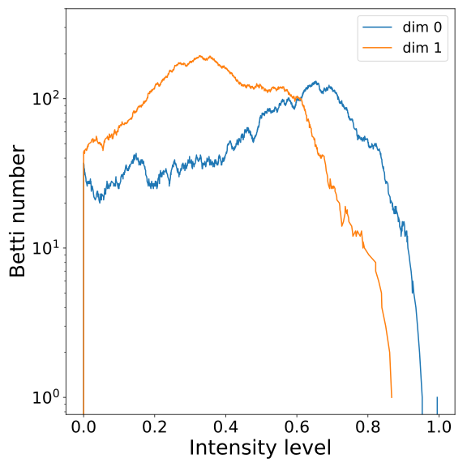
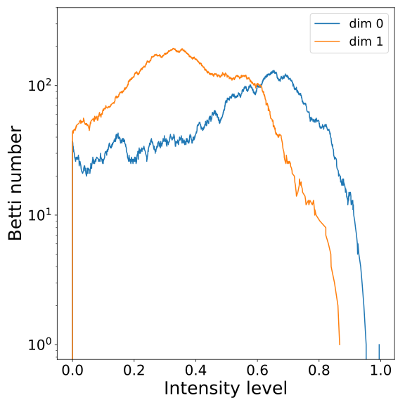
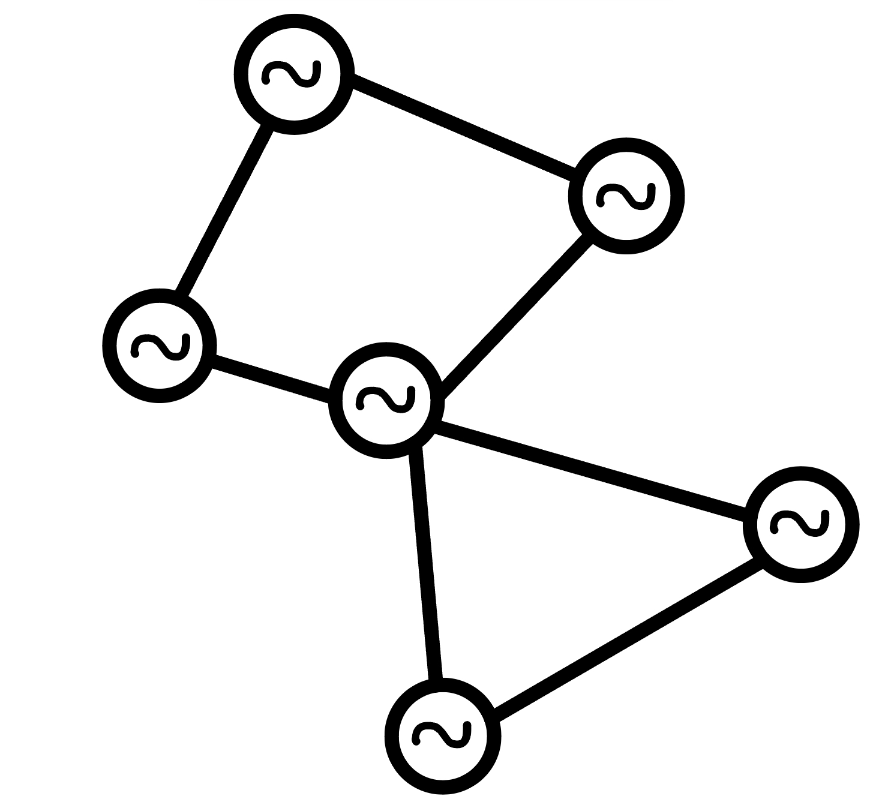
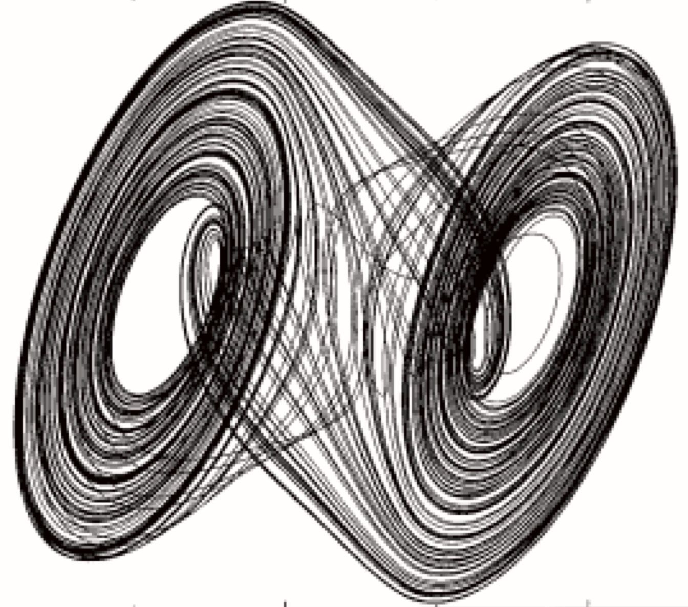
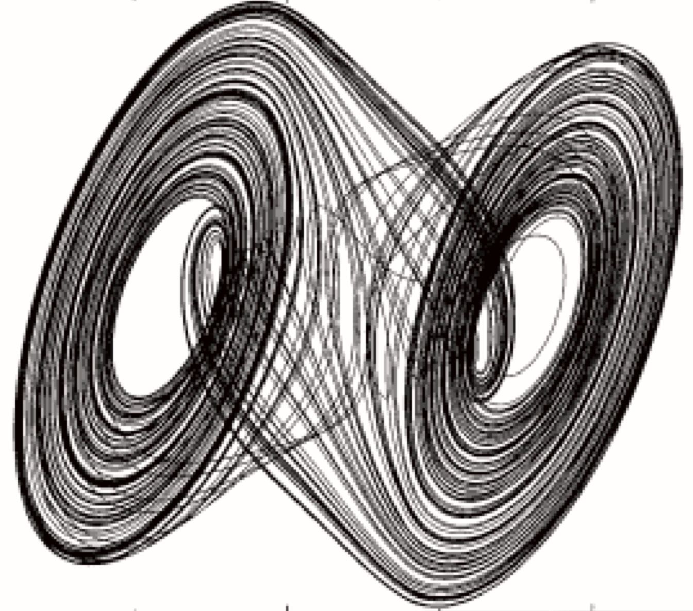

Computational topology for
data analysis and models
XIMENA FERNANDEZ


TOPOLOGICAL DATA ANALYSIS
Topological Data Analysis
DATA$\mathbb{X}_n \subset \mathbb{R}^D$
Topological Data Analysis
Let $X$ be a topological space and let $\mathbb{X}_n = \{x_1,...,x_n\}$ be a finite sample of $X$.
Inference problem: How to estimate topological properties of $X$ from $\mathbb{X}_n$?
$\mathbb{X}_n \subset \mathbb{R}^D$
$X$

Topological Data Analysis
Let $X$ be a topological space and let $\mathbb{X}_n = \{x_1,...,x_n\}$ be a finite sample of $X$.
Inference problem: How to estimate topological properties of $X$ from $\mathbb{X}_n$?
$\mathbb{X}_n \subset \mathbb{R}^D$
$\text{Evolving reconstructions}$
Topological Data Analysis
Let $X$ be a topological space and let $\mathbb{X}_n = \{x_1,...,x_n\}$ be a finite sample of $X$.
Inference problem: How to estimate topological properties of $X$ from $\mathbb{X}_n$?
$\mathbb{X}_n \subset \mathbb{R}^D$
$\text{Evolving reconstructions}$
$\text{Persistent Homology}$
$\text{(holes)}$

MAIN CHALLENGES IN TDA
MAIN CHALLENGES IN TDA
- Real world applications
- Theoretical guaranties of the estimation
- New topological invariants from data
Applications
Neuroscience: grid cells
Main result: Establish connections between the topology of the network and the topology of the attractor for grid cells.


S. Benas*, X. Fernandez*, E. Kropff. Modeled grid cells aligned by a flexible attractor. eLife 12:RP89851 (2023)
Applications
Biomedicine: epilepsy
Main result: Given a physiological recording of the brain activity, topologically detect in real time epileptic seizures with an algorithm.

X. Fernandez, D. Mateos. Topological biomarkers for real-time epileptic seizures. Preprint. (2022)
Applications
Audio ID: collab. Spotify
Main result: Given two audio tracks, identify whether they correspond to topologically similar audio content.

$~$
 $~$
$~$
 $~$
$~$
 $~$
$~$
 $~$

$~$

 



W. Reise, X. Fernandez, M. Dominguez, H.A. Harrington, M. Beguerisse-Diaz. Topological fingerprints for audio identification. SIAM Journal on Mathematics of Data Science (2024, accepted)
Theoretical guaranties
Density-based Riemannian geometry on data
Main result: Persistent homology is not robust in general to noise and outliers.

Let $\mathbb{X}_n = \{x_1,...,x_n\}\subseteq \mathbb{R}^D$ be a finite sample.
For $p> 1$, the Fermat distance between $x,y\in \mathbb{R}^D$ is defined by \[ d_{\mathbb{X}_n, p}(x,y) = \inf_{\gamma} \sum_{i=0}^{r}|x_{i+1}-x_i|^{p} \] over all paths $\gamma=(x_0, \dots, x_{r+1})$ of finite length with $x_0=x$, $x_{r+1} = y$ and $\{x_1, x_2, \dots, x_{r}\}\subseteq \mathbb{X}_n$.


FUTURE DIRECTIONS
Collaboration with the Applied Mathematics GroupApplications
Network science: Kuramoto models
- Work in progress (with H. Schenck, H. A. Harrington and M. Stillman): Topological and computational algebraic geometry methods for Kuramoto systems.
- Project: (Non-)Synchronization of Kuramoto systems in geometric graphs.
- Conjecture: The Kuramoto model on random geometric graphs over spaces with non-trivial homology does not synchronize.

Applications
Fluid dynamics
- Project: Topological analysis of flow dynamics
Case study: Driven double gyre.
Applications
Fluid dynamics
Collaboration with the Mathematical Physics Group- Project: Topological analysis of flow dynamics Case study: Driven double gyre.
New topological invariants of data
Persistence beyond homology
Project: Theory and practice for the estimation of the fundamental group and knot invariants from point clouds.

 $~~~$
$~~~$
Lorenz attractor$~~~~~~~~~~~~~~~~~~~~~~~~~~$Chua attractor
$~$
Related to: X. Fernandez. Morse theory for group presentations. Transactions of the AMS. (2024, to appear)